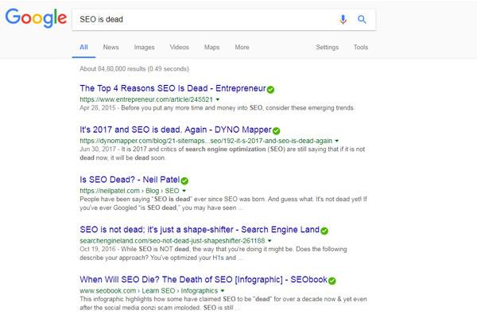
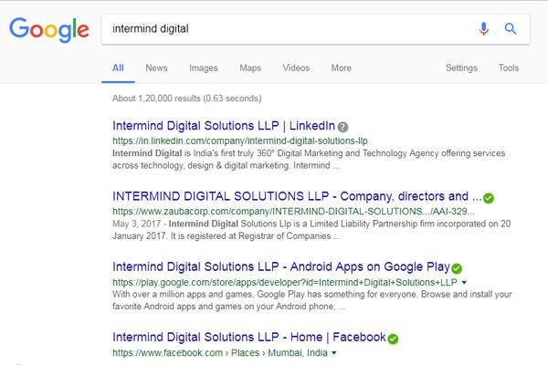

Blog //
An Obituary For SEO | Dead or Alive?
I heard from colleagues and friends that SEO is on its death bed. They even told me that my name has been put up for writing an obituary for her.
My initial reaction was a mix of sorrow and surprise. I have known SEO since 1999 & met her during a project in Paris for my client ParisHotels.com.

With close to 3 million searches per second, it's hard to believe she was dying. To confirm the news, I did what I've done best all these years; I searched on Google

Not conclusive at all! I decided not to wait for the last moment & keep the obituary ready fearing for the worst.
SEO was born in 1996 & even with no formal qualification worked for large companies of his era such as Alta Vista, Lycos and Yahoo. In 2000, SEO married Google & also worked for his startup Google Inc. (Now a subsidiary of Alphabet Inc.) They had their share of fights like all couples do. Google would complain to SEO about her "black hat techniques" and SEO always retaliated that unlike a good husband, Google has not been completely transparent with her & always wondered what secrets Google kept to himself. Despite this, theirs was a successful marriage.
SEO loved animals and has worked for the betterment of Penguins, Pandas, Pigeons, Hummingbirds. Google named all of them, except Pigeon, a name coined by their good family friend Search Engine Land. Their neighbours claimed that these activities of the couple impacted their business negatively. Google publicly blamed SEO for the mess, but it only helped skyrocket the popularity of SEO. Although she started her career helping small businesses generate business, large corporations signed her up in the last decade.
She is survived by her family members, King Content, Page Title, Page Speed, User Interface, Link Building Jr. & her son, Artificial Intelligence (Rankbrain) and daughter Smart Speaker.
Now that the writing part was out of the way, I rushed to pay her a visit. I must admit she looked very different from what I remembered last, but not even remotely like someone who was on her death bed. In fact she looked even prettier. I spent some time with her kids. Rankbrain will surely grow up to be a genius. He was speaking effortlessly in a dozen different languages & conversed with me fluently in Hindi once he learned that I was from India. When he started talking about "high dimensional vector space", I hurriedly cut the conversation short & turned to her little sister Smart Speaker (Home). I asked her to sing a nursery rhyme & she willingly did. I asked her if she'll come with me to India. She backed away from me. Her mom was worried about her performance. Her friend Echo was the darling of teachers in school. I assured her that Echo will be no match for Home in the future. Echo's first mover advantage would fade away. To illustrate the point, I asked Home when I should leave for my next meeting. Pat came the reply "Leave in 10 mins" She even booked me an Uber.
As I was sitting in my Uber, I was thinking to myself "SEO is not dying away so soon". I did a search for my company name on Google. The site was launched 5 months back. We were too busy with client projects to optimize the website for search results.

Our website didn't even feature for a branded keyword search. I was smiling to myself. Your website won't feature on search all by itself, even when you search for your company name! You still have to do your keyword research, painstakingly create unique titles, description, image alt tags, rich snippets and heading tags for each page and then do link building the hard way. All this will still not help you rank for competitive keywords unless you take care of page speed, usability and quality content. Didn't make your website responsive for mobile phone display? Hard luck, you won't rank on mobile search. Long Live SEO!